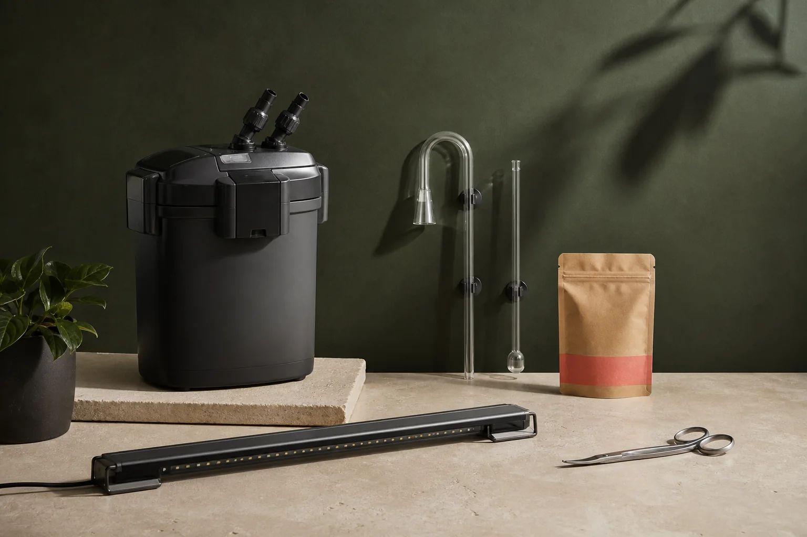

Low-iron glass
Rimless tanks
Ultra-clear 45° mitered glass aquariums from 30 to 240 litres, with leveling foam mats included.
Warranty 2 yr
From ₹4,800

Build the system
Every listing explains capacity, use case, and where you can sensibly spend less.
Ultra-clear 45° mitered glass aquariums from 30 to 240 litres, with leveling foam mats included.
Sponge, hang-on-back, and multi-stage canister systems sized by real livestock load and bio-volume.
Dimmable WRGB LED light bars with honest PAR penetration and gentle sunrise/sunset ramp timers.
Staple crisps, herbivore wafers, fry powders, gamma-irradiated frozen, and specialist pellets.
Sand spatulas, wave scissors, spring shears, pinsettes, and magnetic glass algae scrapers.
High-precision liquid master test kits, electronic heaters, digital thermometers, and TDS meters.
Try adjusting your search terms or clearing your equipment category filter.
“Buy the filter for the aquarium you’ll have in a year, not the empty glass you have today.”
Before you buy
A sensible baseline is 5–8 tank volumes per hour for moderate community setups, and 8–10x for heavy bio-loads or cichlid tanks. Biological media quality and porous surface area matter just as much as raw flow numbers.
No. Many plants (Anubias, Java ferns, Cryptocorynes, mosses) thrive beautifully without CO₂ when lighting intensity is kept moderate. CO₂ is primarily required for demanding red stem plants and dense carpeting species like Monte Carlo.
Yes. We stock spare parts and maintenance consumables for all major lines we carry. Simply message us with your equipment model and part requirement via the special order form.